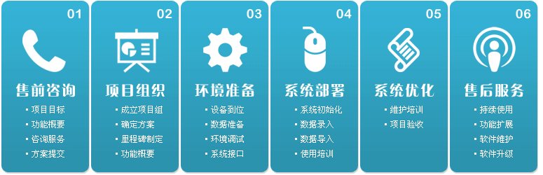

有策软件
Uce Software
首页
HOME
服务
SERVICE
产品
PRODUCT
关于我们
ABOUT
服务
SERVICE
主动、专注、人性化的高效服务
我们的服务
售前咨询
项目组织
环境准备
系统部署
系统优化
售后服务

售前咨询
主要工作包括有策与用户单位的充分沟通，了解用户单位的内部外部环境、教育信息化基础、用户单位提出实施有策教育软件的初衷和目标等。在此基础上，有策提出项目建设方案建议书，方案书中涉及软件的模块、软件的适应性、软件二次开发等方面的内容。该方案书是有策与用户单位进行下一步交流的基础。
项目组织
有策教育软件实施小组由用户单位和有策共同组成，并由用户单位的高层领导统一领导。用户单位人员包括主管信息化建设的领导、信息中心负责老师，有策方面的人员包括项目经理和技术工程师。用户单位和有策的人员共同组成项目组，项目组的组长一般由用户单位人员单位。项目经理负责与用户的协调，确定用户需求和解决方案，确定实施方案并对整个项目的实施质量负责，项目实施小组将制定并提交详细的项目实施计划。
环境准备
系统环境包括硬件网络环境以及数据接口。这一阶段主要是为有策教育软件的部署作技术准备，确保系统能够顺利运行。满足管理要求和软件部署要求的计算机网络软件、硬件环境搭建。对系统初次安装所需数据进行准备，并为学校已有系统或将要上的系统提供或者预留接口。
系统部署
整个项目的攻坚阶段，主要工作有：系统初始化，用户机构信息、用户信息、参数设置和授权等；软件使用培训，该培训以上机操作为主；软件持续使用和问题提出，并将使用过程中的各种问题填写到奥牌公司提供的《需求变更表》中，这一阶段以功过系统初验为结束。
系统优化
有策将协助用户单位对使用过程中提出的问题进行归纳整理，形成软件修改需求报告，并根据该报告进行软件的客户化开发；有策提供软件的功能和业务流程测试清单，与客户共同进行软件测试，保证已设计好的业务流程在新的系统中稳定的运行。系统稳定运行后，有策对用户单位的系统维护进行培训，并将向客户提供用户报告，总结项目实施过程中的经验和教训，整理并提交软件部署过程的所有文档，作好系统终验准备。系统通过终验后，有策将向用户单位移交整个系统，并就售后服务支持作出安排。
售后服务
详细的档案管理：公司设有详细的技术资料档案和服务档案，以便于更好的服务；实时的服务响应：公司提供7*24小时的服务响应；保用期上门服务：在保用期内，通过公司的服务热线，当系统出现任何故障时，只需要拨打电话，技术人员在最短的时间内赶到现场，并以最快的速度提供解决方案；多种远程服务：用户也可以通过电子邮件、电话、传真、技术支持网站向公司技术支持部进行进行咨询，请求服务；技术支持部通过电子邮件、电话、传真、技术支持网站向用户提供咨询服务支持。